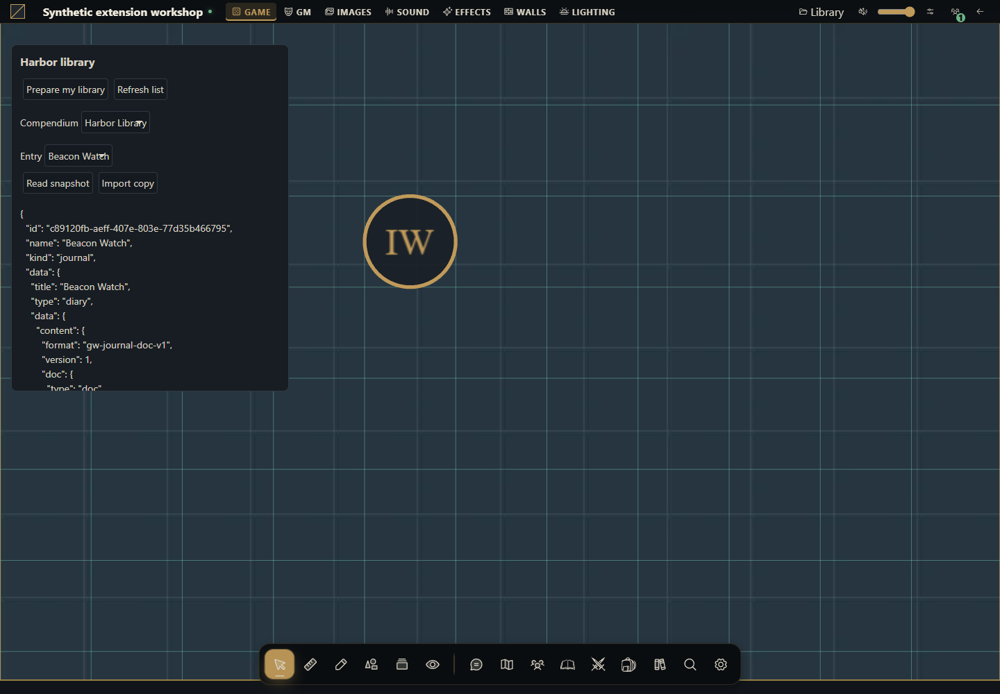

How to create a compendium module
Build the complete package from an empty directory, install it and verify its original content.


What you will build
Start with an empty directory and finish with an installable module. It displays Harbor library on the table. The GM clicks Prepare my library to create a Harbor Library compendium containing a Beacon Watch journal entry, then reads the snapshot and imports a copy through the module's own interface.
Use this route for an ordinary module working with campaign documents. Authorized API actions create the content, which persists in the campaign. An ordinary module cannot declare content.compendiums without system; learn that separate route in How to include compendiums in a system.
Use Gravewright 0.3.0 and a disposable campaign. You need the installation owner's account to install and the campaign GM role to prepare/import. No npm, database access, RPG catalog or rules module is required. All sample text is original. Package buttons are English.
1. Create the directory and understand the files
Create a directory named campaign-library. Save every complete file from section 4 as UTF-8 with the exact names and paths, or extract the ZIP below. manifest.json identifies the package; main.mjs renders its panel; library.mjs owns the write sequence; maintenance.mjs contains optional maintenance functions; styles.css scopes the module styling; LICENSE.txt permits reuse of this example.
campaign-library/
manifest.json
main.mjs
library.mjs
maintenance.mjs
styles.css
LICENSE.txt2. Package and install
Use Python already available in your development environment. These commands start in the directory containing campaign-library. On POSIX use python3 if that is your interpreter name. They archive only the listed files with manifest.json at the root, excluding local state.
POSIX
cd campaign-library
python -m zipfile -c ../campaign-library-source.zip "manifest.json" "main.mjs" "library.mjs" "maintenance.mjs" "styles.css" "LICENSE.txt"PowerShell
Set-Location -LiteralPath .\campaign-library
python -m zipfile -c ..\campaign-library-source.zip "manifest.json" "main.mjs" "library.mjs" "maintenance.mjs" "styles.css" "LICENSE.txt"List the ZIP using python -m zipfile -l ../campaign-library-source.zip while still in the project directory. As owner open Inside → Modules → Install module → Install from ZIP, choose it and click Install. This local upload requires no signature; catalog publication uses the documented signing workflow.
Open your test campaign as GM. Use its Gravewright button → Extensions, find Harbor campaign library 1.0.0 and click Activate. Close the menu. Harbor library appears below the top bar. See your first module to locate these screens.
3. Prepare, read and import
Click Prepare my library. The controller checks isGM, saves four operation UUIDs in storage.user and creates the compendium.
It creates a native journal, uses the returned journal_id/version to save a page in gw-journal-doc-v1 format, then snapshots the journal with kind journal and resourceId. It does not send the journal body directly to compendiums.add.
Wait for Library ready. The selectors show Harbor Library and Beacon Watch. Click Read snapshot to see the kind journal envelope and the original blue-lantern page.
Click Import copy. The result identifies the created document. Open Journals and inspect the imported diary and its page. Import uses the mounted campaign; there is no payload field for a different campaign.
Click Prepare my library again, then deactivate/reactivate the module. The same GM resumes the stored workflow without creating another pack or entry. Refresh to verify. Clicking Import copy again after success is a new action and may create another copy.
Preparation belongs to the user, module and campaign. A different GM has their own workflow and creates their own library if they click prepare. This keeps retry UUIDs with the account that performed the operations. The resulting compendium belongs to the campaign and survives deactivation.
4. Copy every complete file
To change sample content edit journalData in library.mjs before preparing a new library. Every section has a stable ID, title, audience and rich document. To rename documents, change the create/update/add literals. Changing the module code does not rewrite existing snapshots: they are captured copies rather than live journal links.
manifest.json
{
"id": "example.harbor-library",
"name": "Harbor campaign library",
"version": "1.0.0",
"sdk": {
"requires": ">=1.0.0 <2.0.0",
"tested": "1.0.0"
},
"entry": "main.mjs",
"description": "Creates an original journal and reusable campaign snapshot through the public API.",
"author": "Gravewright documentation",
"license": "MIT"
}main.mjs
import {createLibrary} from "./library.mjs";
export default {
start({styles}) { styles.use("styles.css"); },
register({register}) {
register("table.interface", async ({root, api, storage, signal, onDispose}) => {
const library = createLibrary({api, storage, signal});
const el = (tag, text) => {
const node = root.ownerDocument.createElement(tag);
if (text !== undefined) node.textContent = text;
return node;
};
const panel = el("section"); panel.className = "harbor-library";
const prepare = el("button", "Prepare my library");
const refresh = el("button", "Refresh list");
const read = el("button", "Read snapshot");
const copy = el("button", "Import copy");
for (const button of [prepare, refresh, read, copy]) button.type = "button";
const packLabel = el("label", "Compendium");
const packs = el("select"); packLabel.append(packs);
const entryLabel = el("label", "Entry");
const entries = el("select"); entryLabel.append(entries);
const output = el("pre"); output.setAttribute("role", "status");
panel.append(el("h3", "Harbor library"), prepare, refresh, packLabel, entryLabel, read, copy, output);
root.append(panel); onDispose(() => panel.remove());
let state, busy = true, importAttempt;
const controls = () => {
prepare.disabled = busy || !state?.isGM;
refresh.disabled = busy;
read.disabled = busy || !entries.value;
copy.disabled = busy || !state?.isGM || !entries.value;
packs.disabled = busy; entries.disabled = busy;
};
const options = (select, rows, selected) => {
select.replaceChildren();
const empty = el("option", "Choose..."); empty.value = ""; select.append(empty);
for (const row of rows) { const option = el("option", row.name); option.value = row.id; select.append(option); }
select.value = rows.some(row => row.id === selected) ? selected : "";
};
const chooseEntries = selected => {
options(entries, state?.packs.find(pack => pack.id === packs.value)?.entries ?? [], selected);
controls();
};
const load = async (packId = packs.value, entryId = entries.value) => {
const next = await api.compendiums.state({}, {signal});
if (signal.aborted) return;
state = next; options(packs, state.packs, packId); chooseEntries(entryId);
};
const run = async task => {
if (busy || signal.aborted) return;
busy = true; controls(); output.textContent = "Working...";
try { await task(); }
catch (error) { if (!signal.aborted) output.textContent = "Error: " + (error.code ?? "unavailable") + ". Refresh and review before retrying."; }
finally { if (!signal.aborted) {busy = false; controls();} }
};
prepare.addEventListener("click", () => void run(async () => {
const saved = await library.prepare();
await load(saved.packId, saved.entryId);
if (!signal.aborted) output.textContent = "Library ready. Select Read snapshot or Import copy.";
}), {signal});
refresh.addEventListener("click", () => void run(async () => {await load(); if (!signal.aborted) output.textContent = "List refreshed.";}), {signal});
packs.addEventListener("change", () => {chooseEntries(""); importAttempt = undefined;}, {signal});
entries.addEventListener("change", () => {importAttempt = undefined; controls();}, {signal});
read.addEventListener("click", () => void run(async () => {
const value = await library.read(packs.value, entries.value);
if (!signal.aborted) output.textContent = JSON.stringify(value, null, 2);
}), {signal});
copy.addEventListener("click", () => void run(async () => {
importAttempt ??= {packId: packs.value, entryId: entries.value, requestId: crypto.randomUUID()};
const created = await library.importCopy(importAttempt.packId, importAttempt.entryId, importAttempt.requestId);
importAttempt = undefined;
if (!signal.aborted) output.textContent = "Imported " + created.kind + ": " + created.id + ". Open Journals to inspect it.";
}), {signal});
controls();
try { await load(); }
catch (error) { if (!signal.aborted) output.textContent = "Error: " + (error.code ?? "unavailable"); }
finally { if (!signal.aborted) {busy = false; controls();} }
});
},
stop() {},
};library.mjs
// The source text and snapshot belong to this original example.
export const journalData = {
sections: [{
id: "harbor-notice", title: "Harbor notice", kind: "text", audience: "public",
content: {
format: "gw-journal-doc-v1", version: 1,
doc: {type: "doc", content: [{type: "paragraph", content: [
{type: "text", text: "At sunset, the harbor keeper lights a blue lantern. Bring a coil of rope to join the watch."},
]}]},
},
}],
};
const key = "harbor-library-workflow-v1";
const fail = code => Object.assign(new Error(code), {code});
export function createLibrary({api, storage, signal}) {
return {
async prepare() {
if (!(await api.compendiums.state({}, {signal})).isGM) throw fail("permission_denied");
let record = await storage.user.get(key);
if (record && record.value?.schema !== 1) throw fail("invalid_data");
if (!record) record = await storage.user.set(key, {
schema: 1,
requests: Object.fromEntries(["pack", "journal", "body", "snapshot"].map(name => [name, crypto.randomUUID()])),
}, {expectedRevision: null});
const checkpoint = async changes => {
record = await storage.user.set(key, {...record.value, ...changes}, {expectedRevision: record.revision});
};
// Save request identities before making writes; retries reuse exact inputs.
if (!record.value.packId) {
const created = await api.compendiums.create({name: "Harbor Library"}, {signal, requestId: record.value.requests.pack});
await checkpoint({packId: created.id});
}
if (!record.value.journalId) {
const created = await api.journals.create({title: "Beacon Watch", journal_type: "diary"}, {signal, requestId: record.value.requests.journal});
await checkpoint({journalId: created.journal_id, journalVersion: created.version});
}
if (!record.value.bodySaved) {
await api.journals.update({
journal_id: record.value.journalId, version: record.value.journalVersion,
title: "Beacon Watch", visibility: "private", data: journalData,
}, {signal, requestId: record.value.requests.body});
await checkpoint({bodySaved: true});
}
if (!record.value.entryId) {
const added = await api.compendiums.add({
packId: record.value.packId, kind: "journal", resourceId: record.value.journalId,
name: "Beacon Watch",
}, {signal, requestId: record.value.requests.snapshot});
await checkpoint({entryId: added.id});
}
return record.value;
},
async read(packId, entryId) {
return api.compendiums.read({packId, id: entryId}, {signal});
},
async importCopy(packId, entryId, requestId) {
return api.compendiums.import({packId, id: entryId}, {signal, requestId});
},
};
}maintenance.mjs
const options = signal => ({signal, requestId: crypto.randomUUID()});
const editable = packId => {
if (packId.startsWith("native:")) throw Object.assign(new Error("Installed packs are read only"), {code: "invalid_data"});
};
export async function shareCampaignPack(api, packId, signal) {
editable(packId);
const pack = (await api.compendiums.state({}, {signal})).packs.find(row => row.id === packId);
if (!pack) throw Object.assign(new Error("Pack not found"), {code: "not_found"});
return api.compendiums.configure({packId, version: pack.version, name: "Harbor Library revised", shared: true, locked: false}, options(signal));
}
export async function grantInstalledPackRead(api, packId, signal) {
if (!packId.startsWith("native:")) throw new Error("Use configure.shared or the native ownership editor for a table pack");
return api.compendiums.setPermissions({packId, level: "read"}, options(signal));
}
export async function readBatch(api, packId, entryIds, signal) {
return api.compendiums.read({packId, ids: entryIds}, {signal});
}
export async function removeSnapshot(api, packId, entryId, signal) {
editable(packId);
const entry = await api.compendiums.read({packId, id: entryId}, {signal});
return api.compendiums.remove({packId, id: entryId, version: entry.version}, options(signal));
}
export async function deleteCampaignPack(api, packId, signal) {
editable(packId);
const pack = (await api.compendiums.state({}, {signal})).packs.find(row => row.id === packId);
if (!pack) throw Object.assign(new Error("Pack not found"), {code: "not_found"});
return api.compendiums.delete({packId, version: pack.version}, options(signal));
}styles.css
.gw-module-root[data-module-id="example.harbor-library"] .harbor-library { position: fixed; top: 64px; left: var(--space-4); z-index: 10; box-sizing: border-box; width: 400px; max-width: calc(100vw - 32px); max-height: 50vh; overflow: auto; padding: var(--space-3); border: 1px solid var(--border); border-radius: var(--radius-md); background: var(--surface); color: var(--text); font: 14px/1.5 system-ui, sans-serif; }
.gw-module-root[data-module-id="example.harbor-library"] .harbor-library h3 { font-size: 16px; margin: var(--space-0) var(--space-0) var(--space-2); }
.gw-module-root[data-module-id="example.harbor-library"] .harbor-library label { display: block; margin-top: var(--space-2); }
.gw-module-root[data-module-id="example.harbor-library"] .harbor-library button, .gw-module-root[data-module-id="example.harbor-library"] .harbor-library select { font: inherit; margin: var(--space-1); padding: var(--space-1); max-width: 100%; }
.gw-module-root[data-module-id="example.harbor-library"] .harbor-library pre { white-space: pre-wrap; overflow-wrap: anywhere; font: inherit; }LICENSE.txt
MIT License
Copyright (c) 2026 Gravewright contributors
Permission is hereby granted, free of charge, to any person obtaining a copy
of this software and associated documentation files (the "Software"), to deal
in the Software without restriction, including without limitation the rights
to use, copy, modify, merge, publish, distribute, sublicense, and/or sell
copies of the Software, and to permit persons to whom the Software is
furnished to do so, subject to the following conditions:
The above copyright notice and this permission notice shall be included in all
copies or substantial portions of the Software.
THE SOFTWARE IS PROVIDED "AS IS", WITHOUT WARRANTY OF ANY KIND, EXPRESS OR
IMPLIED, INCLUDING BUT NOT LIMITED TO THE WARRANTIES OF MERCHANTABILITY,
FITNESS FOR A PARTICULAR PURPOSE AND NONINFRINGEMENT. IN NO EVENT SHALL THE
AUTHORS OR COPYRIGHT HOLDERS BE LIABLE FOR ANY CLAIM, DAMAGES OR OTHER
LIABILITY, WHETHER IN AN ACTION OF CONTRACT, TORT OR OTHERWISE, ARISING FROM,
OUT OF OR IN CONNECTION WITH THE SOFTWARE OR THE USE OR OTHER DEALINGS IN THE
SOFTWARE.5. Share and maintain the library
The pack starts private. As GM integrate maintenance.mjs's shareCampaignPack into an explicit module action and pass the packId returned by prepare. It reads the current version before configure, sets shared true and leaves the pack unlocked. Check that native ownership grants do not further restrict the test account. As a player with reading permission click Refresh list, select the pack and Read snapshot. Prepare and Import are disabled; the server also rejects writes/importing.
maintenance.mjs includes readBatch for 1–100 unique IDs (never combine id and ids), removeSnapshot and deleteCampaignPack. Use them only for your test library after verifying the IDs. Removing an entry uses the entry version; deleting a pack reads its version after other changes. Neither removes the source diary or already imported documents. Unlock a locked pack through configure before editing/deleting it.
grantInstalledPackRead demonstrates setPermissions for native/installed packs identified by native:. For table-created packs use configure.shared or native ownership controls. The complete file above contains actual payloads for all these actions.
6. Verify repetition, failures and permissions
Prepare twice with the same GM and count one pack and one entry. Edit the source diary through the interface, read the snapshot and confirm its captured text stays unchanged. Import, reopen and inspect the page. Grant a player reading permission, test reading and attempt a direct API import: the server must reject it.
If a write response is lost, Prepare resumes with the same account's saved UUIDs and exact payloads. Every checkpoint uses expectedRevision; on conflict reload before retrying. If someone edited the diary before the body-save step, its old revision is rejected without silently replacing it: review the source and pending operation before changing code/state. Import copy retains its UUID for a pending attempt in the panel; if the context closes with an unknown outcome, inspect journals before requesting another import. Cancelling a context cannot undo a committed write.
A network failure is an error rather than an empty list. Deleted IDs or revoked access produce not_found/permission_denied; do not erase workflow state or create replacements to conceal failures. Do not reset the workflow to update content. For changed package bytes use version 1.0.1, install and activate it; existing documents and workflow data remain saved.
How to use AI to adapt this library
Adapt tutorial-compendium-module into a library of original notices. Inspect frontend.json, journals/services.py and compendiums/services.py for release 0.3.0. Preserve journal_id/version, rich documents, snapshots by resourceId, retry UUIDs and expectedRevision. Provide every file, click and GM/player checks. Do not add content to an ordinary module manifest or update snapshots automatically. Include batch reading and versioned maintenance without deleting campaign content.